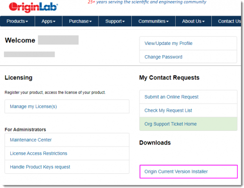
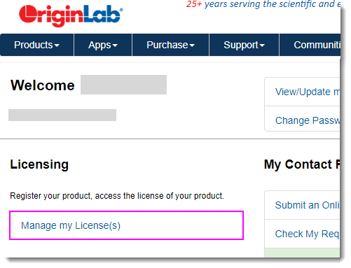
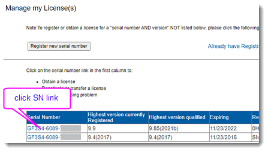
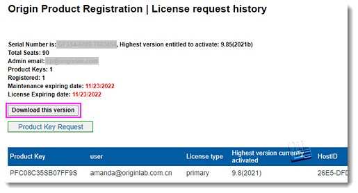

FAQ-1103 Wie lade ich das Origin-Installationsprogramm mit meiner registrierten Seriennummer herunter?
Download-Installer
Letztes Update: 26.05.2021
- Melden Sie sich über Ihr Online-Konto auf der Webseite von OriginLab an.
- Klicken Sie auf der Willkommens-Seite auf “Origin Trial Version” im Abschnitt Downloads.
- |
- Melden Sie sich über Ihr Online-Konto auf der Webseite von OriginLab an.
- Klicken Sie auf der Willkommensseite auf den Link "Meine Lizenz(en)".
- |
- Diese Seite listet alle Seriennummern auf, die Sie registriert haben, und die entsprechenden Versionen. Um das Installationsprogramm einer Seriennummer herunterzuladen, klicken Sie auf den Link dieser Seriennummer.
- |
- Klicken Sie auf der Webseite Origin-Produktregistrierung | Verlauf der Lizenzabrufe auf die Schaltfläche Diese Version herunterladen, um die höchste Version (des neuesten Service Releases) dieser Seriennummer zu erhalten.
- |
Schlüsselwörter:installieren, Installationsprogramm, Build herunterladen, neueste Version, neuestes SR